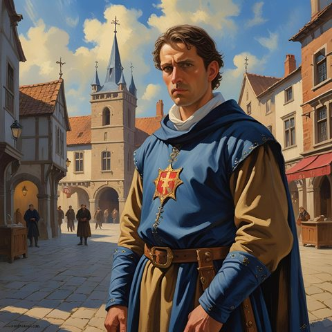

Le Bailli Grugeot Papelin

- Bailli de Justice de Bourg-Preux, l'un des sept échevins.
- A chargé Azog et Aldaron d'enquêter sur les brigands payés en dirhems de Ressine (fin de l'automne 1002 CR). Ils ont remonté la piste jusqu'au Voïvode Brancovan.